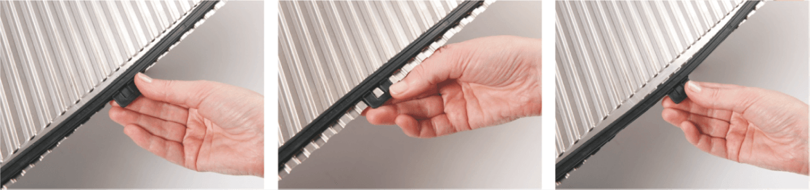

Уплотнение теплообменника является важнейшим элементом, влияющим на эксплуатационные характеристики теплообменного аппарата.
широко распространенная стандартная резина
Содержит фтор, поэтому подходит для химически агрессивных сред.
широко распространенная стандартная резина
Комплект уплотнений теплообменника состоит из стартового Clip-on Start уплотнения (примыкание к станине), эндового Clip-on End (примыкание к плите) и промежуточных. При замене уплотнений теплообменника по стандарту меняется весь комплект, так как резина за время эксплуатации приходит в состояние деформации.